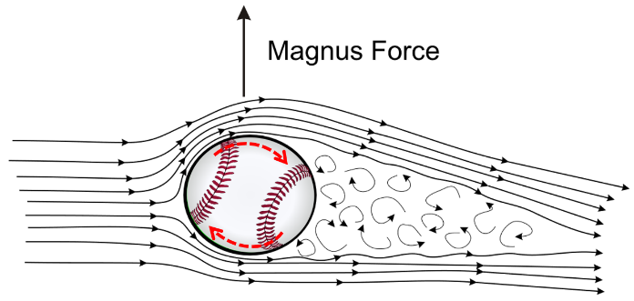

News
Update soonArticle
Baseball
2021/11/10

Pitcher and batter combat is the most exciting moment during the baseball game. As a result, pitcher can make good use of breaking ball to confuse batter and weaken batter threat. Each kind of breaking ball has its distinctive trajectory, which is mainly caused by the airflow during flight. After analyzing the motion of the baseball, we find that drag force, gravity and Magnus force affect the ball’s trajectory dramatically.
Blockstacking Problem
2021/11/10

不知道大家小時候最喜歡玩什麼呢，在我們那個年代還沒有智慧型手機，大家最喜歡玩的就是大富翁、撲克牌、拼圖的遊戲，那除了這些以外我最喜歡玩的就是疊疊樂這個遊戲了。
在一般的疊疊樂的玩法就是要輪流在交錯的積木中抽出積木，直到讓積木塔倒下的人就是輸家。而在抽積木的過程中除了要考慮積木的角度和摩擦力的大小更要考慮系統質心的位置改變，可說是一個看似簡單卻實質複雜的物理問題。
Gabreil's Horn
2021/11/10

數學家們，發現了一件十分有趣的事情：他們發現這個向x軸方向無限延伸的喇叭結構其體積是個定值(即體積收斂)，然而其表面積卻是個無限值。這樣聽起來確實很怪，怎麼體積是個有現值，表面積卻可以無限的不斷放大?
Pizza Theorem
2020/7/23

After a boring working day, you can’t wait to enjoy a wonderful weekend. Therefore, you invite your best friend and going to hold a party in your backyard. While you are going to cut the pizza and distribute to the guest, some quarrel begins in the crowd, arguing the size of the pizza slice isn’t equally. Since you can’t precisely cut through the center of the circle, perhaps you can’t divide the pizza equally…